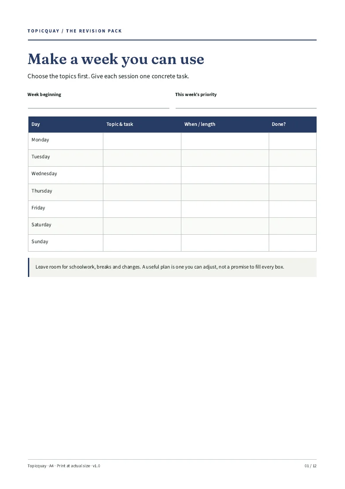
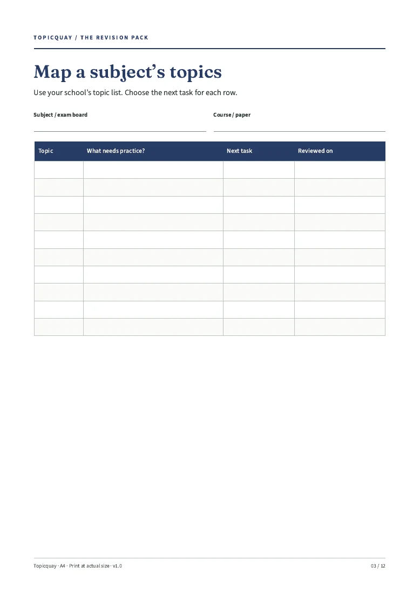

Map the topics
Use your school’s current specification and your own notes.
A PLAN YOU CAN PUT ON PAPER
A printable GCSE revision planner: map your topics, plan the week and keep track of practice.
Checkout is not open. No orders or payments taken.
12-page A4 printable PDF · Digital files only

LOOK INSIDE
These are renders of the actual included pages. The pack is built; the shop is not open yet.

THREE SIMPLE STEPS
Use your school’s current specification and your own notes.
Give each session a specific task and space in your week.
Keep a mistake bank and choose the next task to revisit.
ONE PACK. ONE PRICE.
Date-free pages to print again for one household. Use with the subjects and resources your school provides.
Organisation tools, not teaching or exam-board guidance. No exam questions, syllabus content or grade promises.
Standard A4 PDF, rendered and text-extracted in Chromium/Poppler. Designed for printing and handwriting; not fillable or a tablet app. Printer and paper are not included.
Topicquay / Digital pack
£5
Planned price · one-off · not on sale
No order can be placed here. No payment is collected.
No purchases yet. Checkout must show delivery, cancellation and refund terms before sales open. Statutory rights will not be excluded.
BEFORE YOU DECIDE
Standard A4 PDF, rendered and text-extracted in Chromium/Poppler. Designed for printing and handwriting; not fillable or a tablet app. Printer and paper are not included.
Print a weekly page and write one task to start. There is no fixed number of study hours or completion-time promise.
Not yet. The files have been built, but checkout and paid delivery are not open. This page does not take orders or reserve a place.
No purchases are being taken. Sale and delivery terms, including your cancellation and statutory rights, must be shown before checkout opens. There is no blanket “no refunds” policy.
Topicquay is a UK sole-trader trading name. No tutoring, marking, exam questions, official dates, syllabus coverage or grade guarantee. Not an exam-board product. Please check the previews and limits before buying once sales open.
TOPICQUAY / 12-page A4 printable PDF
£5 planned · one-off. Checkout is not open.